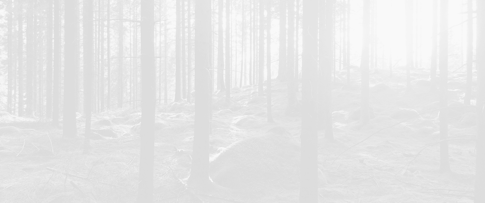
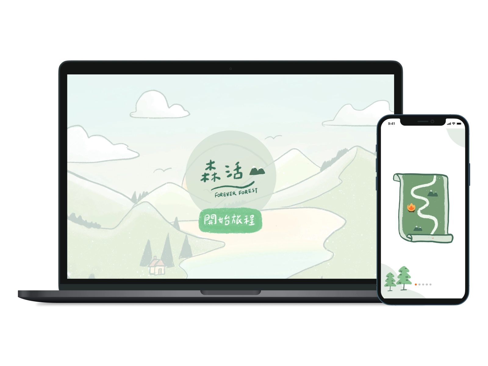
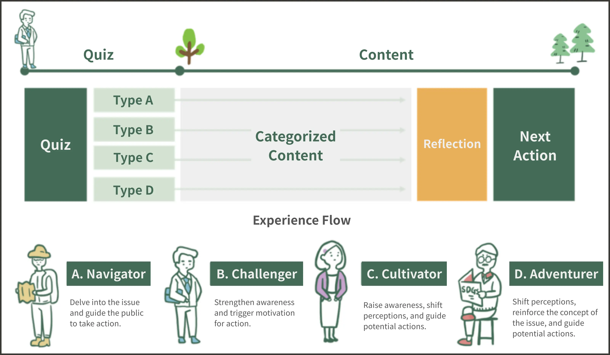

This project, created for the 5th Taiwan Youth Hackathon, focuses on the UN's SDG "SDGs 15: Life on Land." The website centers on "forest management" and uses contextualized experiences to raise awareness, break down the issue, and share key information on terrestrial ecosystems. It also encourages public action through technological tools.
We aim to categorize users based on their profiles and present different topic content to help them identify key knowledge related to the issues. The user experience will be structured as a "game," using a journey story to guide the overall website interaction.
In the classification game experience, we will use small environmental quizzes to calculate the "issue knowledge" and "issue action" scores. Based on the scores, users will be categorized into four different personas, each leading to a tailored content journey. The experience flow is presented in the diagram below:
